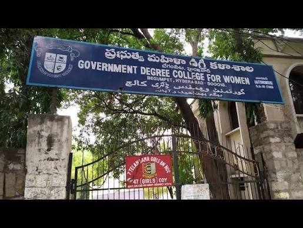
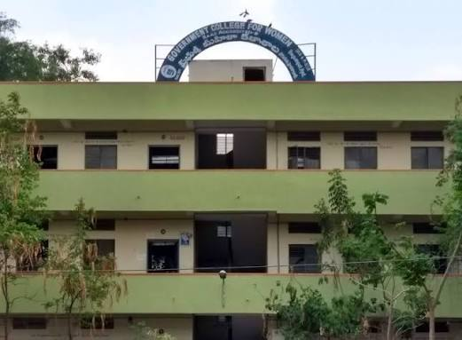
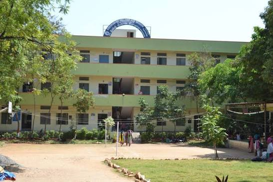
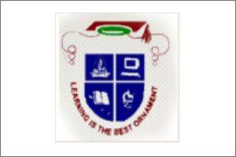

Government Degree College for Women Begumpet was established in 1971 and is one of the most reputed women's College in Telangana.
Located in Hyderabad, the college offers a wide range of undergraduate and postgraduate programmes in Arts, Science, and Commerce Streams.




Government Degree College for Women Begumpet Scholarship programmes aim to provide financial assistance and encourage academic achievement among students from diverse backgrounds.